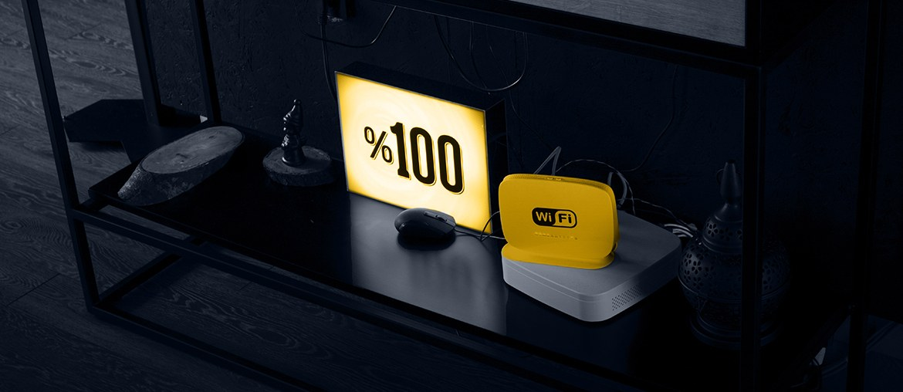

Remote network and router management
Elinext helped a telecom team build a remote platform for network and router operations.
Read case studyWe saw the Southern Europe hiring signal and the EMEA support roles. As Silvus expands, software delivery and QA need to keep pace with field demand.
The signal says Silvus is adding regional operating strength. That usually means more demos, support paths, and product variants for new buyers. StreamScape and StreamLC also put more software on field devices. If QA and web delivery lag, launches slow while core engineers handle support. A flexible squad can absorb that load without touching classified work.
Start with a six-week pilot, then keep the team if the delivery model works.
Tech lead, two senior engineers, one frontend engineer, and one QA automation engineer.
Map StreamCaster, StreamScape, StreamLC, and ATAK plugin flows that can be built offsite without restricted lab access.
Build regression tests around firmware updates, web GUI paths, Android control flows, and role based access.
Add backend and front end capacity for support portal, demo tools, and regional release needs.
Run weekly demos with Silvus owners, then hand over test reports, code notes, and backlog choices.
Elinext is a full-cycle software development company, active since 1997 across regulated markets. We have about 700 in-house specialists, from BA to DevOps, and use no freelancers. For Silvus, the fit is secure delivery across C/C++, web, QA, and long programs. Our ISO 27001 and ISO 9001 practices help with sensitive work and vendor control. Teams have served Siemens, Broadcom, Volkswagen, TRUMPF, and TUI on complex product work. This gives Jesse's owners steady capacity while Silvus keeps product control and lab decisions with them.

Elinext helped a telecom team build a remote platform for network and router operations.
Read case study
Elinext supported real-time monitoring across physical and virtual network components.
Read case studyBring one focused squad into the next delivery window.
Start a conversation